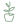
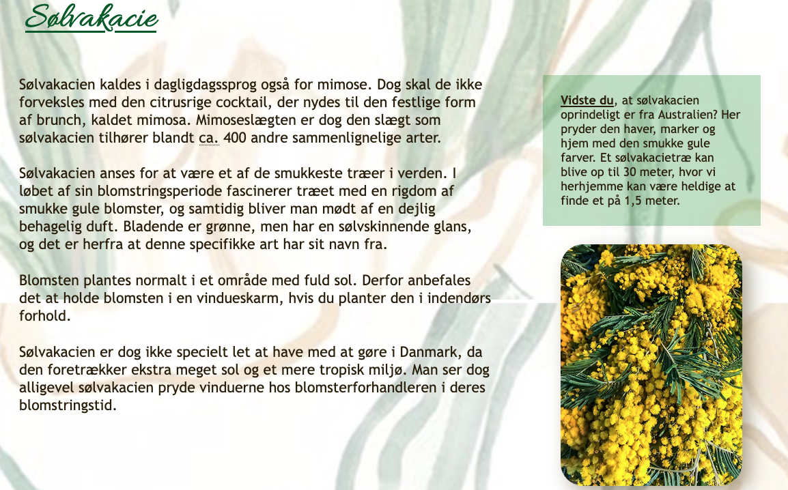
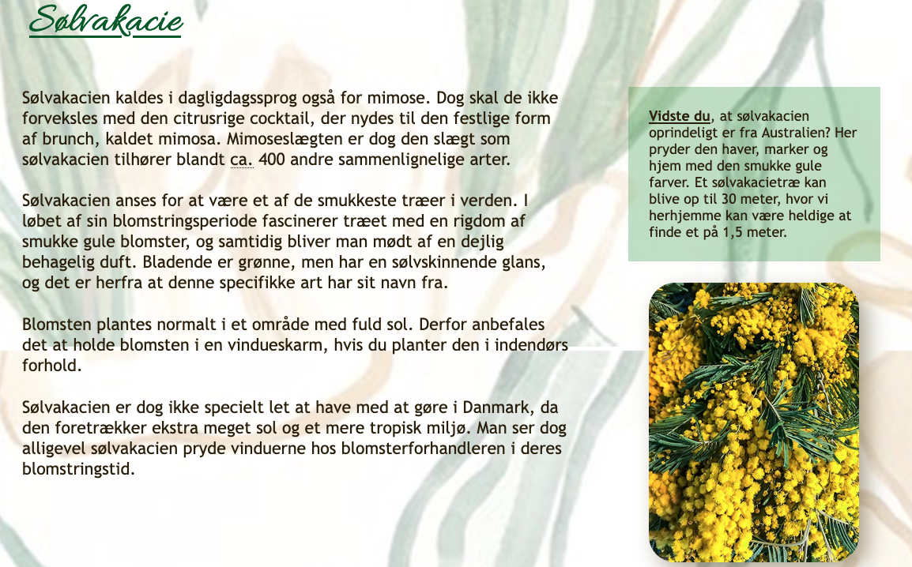
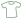

Mit portfolio
Grundlæggende web
Studiestartsprøve
Som studerende på KEA´s Multimediedesign uddannelse, så skal man igennem en studiestartsprøve. Her skulle jeg vise, at vi de sidste par uger havde lært det helt grundlæggende indenfor VS Code og HTML. Vi blev introduceret for hvordan man opbygger et responsivt website, hvilket jeg viste på siden ved brug af CSS grid og flexbox. Her gjorde jeg også brug af mediaqueries, så siden stadig var responsiv, og derfor ikke gjorde brug af grid på mobiltelefoner.

Blooming Season 
Til slut i dette tema skulle jeg selv lave et website. Her var der fokus på wireframes, og jeg lærte derfor vigtigheden i at have dem klar på forhånd, så man nogenlunde ved hvilket udtryk man går efter på sin side. Dog kom jeg frem til, at man ikke altid ender med et resultat der ligner sin første wireframe. Med viden fra studiestartsprøven løste jeg denne opgave, ved at gøre brug af en semantisk opbygning af sitet. På denne måde kom jeg frem til det ønskede udtryk og så tæt på mit wireframe som muligt.
 

Grundlæggende UX
The Ongoing Trend 
I dette tema var der fokus på brugeroplevelser. Det startede ud med, at man selv skulle finde ud af hvad man mente var gode samt dårlige brugeroplevelser på forskellige hjemmesider. Jeg valgte at løse denne opgave, ved at gå i dybden med reserch af en masse tøjhjemmesider, hvor jeg herefter udviklede og designede min egen, der kunne skabe en overordnet forbedret brugeroplevelse. I løbet af denne process havde jeg gang i en hel masse gode idéer, men måtte dog til sidst erkende, at mine færdigheder ikke helt nåede mine ambitioner endnu. Derfor fik jeg kreeret et anderledes styletile, moodboard samt crazy 8´s der virkelig gav et godt udtryk for hvad jeg ville nå frem til.
Grundlæggende animation
Colada Catch
Det at skulle designe og kode et spil fra bunden var en kæmpe udfordring. Her blev jeg for første gang introduceret for Javascript og animationer. Jeg valgte først at gå i gang med det jeg havde kendskab til, og det var at kode selve hjemmesiden. Efter dette kom der en lang process med Adobe Illustrator, og en masse figurer samt assets der skulle tegnes. For at spillet så ens ud på små samt store skærme, så gjorde jeg her brug af CSS positionering og cqw til mine point. Vi blev også introduceret for aktivitetsdiagrammer, og vigtigheden i at skabe overblik inden man koder et spil. Da mit Javascript til spillet skulle kodes, der var det tydeligt at se, at det er et helt andet sprog end HTML og CSS. Ved hjælp af gentagelser af kode, så gav det til sidst mere mening, og jeg stod tilbage med et færdigt produkt i form af mit spil.
Grundlæggende indhold
Passion for Projekter
Tema 5 handlede om indhold. Her skulle vi i grupper af to personer lave en enkelt HTML-side, der indholdte billeder samt video af en person med en passion. I denne opgave var mine ansvarsområder at interviewe, filme og klippe filmen sammen i Premiere Pro. Vi valgte at bruge kamera og lydudstyr fra skolen, da vi ville prøve os frem og lære hvordan vi brugte det på bedste vis. På denne måde fik vi altså testet professionelt udstyr, og fandt ud af hvad der skulle fokuseres og rettes op på til næste opgave. Jeg blev også introduceret for GitHub og dets funktioner til samarbejde af fælles projekter. Ved rigtig brug af GitHub fik vi derfor færdiggjort vores opgave, og var klar til det endelige virksomhedssite.
Virksomhedssite 
Den endelige opgave på 1. semester var en gruppeopgave, hvor vi skulle redesigne en virksomheds hjemmeside for at forbedre brugeroplevelsen. Vi startede derfor ud med at lave et GitHub repository hvor vi kunne opdatere hinanden ift. hvor langt vi var nået i processen. Min rolle i denne opgave var "om"-siden samt klipning af vores 3-minutters interview. Derfor var denne opgave blot en udvidelse af forrige, men denne gang for en rigtig virksomhed. For at finde ud af hvad der gav mening at redesigne, så udførte vi en del test både før og efter vores redesign. Efter at have fået testsvar gav det et tydeligt billede på, at vi med vores redesign var på rette vej. Vi fik svar der gik fra at hjemmesiden var æstetisk flot, dog rodet og uoverskuelig, til at brugergrænsefladen blev optimeret, og at den derfor var lettere for brugeren at finde rundt i efter vores redesign.